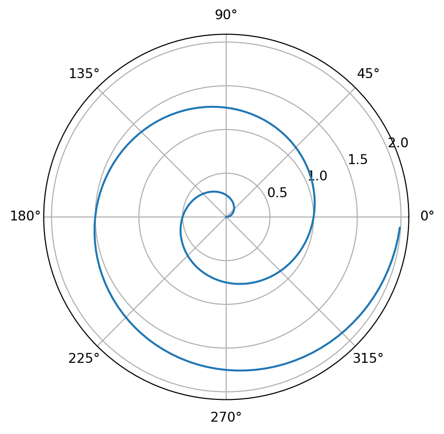

Code
import pandas as pdKAIST
November 2, 2023
데이터가 많이 쌓이고, 선제적 의사결정 지원, Data-Driven Decision 중요
질 좋은, 많은 데이터 활용 중요
Data Exploration, Machine Learning 개념 및 실습, Internal/External Insight 발견, 프로세스의 효율적 개선과 경쟁력 향상을 위한 역량 향상 목표
Python을 활용한 머신러닝 기반 데이터 분석 실습하고 실제 적용을 위한 모델링 수행
Python 3를 기반으로 실습
Term projects : 50%, Peer-review
Mid Term : 30%,
출석,참여도: 20%
Regression, Classification, etc.
정형/비정형 데이터
정형 - 틀이 정해진. 나이, 키, 성별 등의 정보를 담는 데이터
비정형 - 이미지, 언어, 소리, 컨설팅
인간과 유사한 판단을 할 수 있도록 컴퓨터에게 학습을 시킨다. 적당한 반복을 할 수 있을 때, 이를 대체할 수 도록
Analysis : 데이터마이닝, 머신러닝, 딥러닝
Action: 의사결정자, 엔지니어, 마케터, 투자자, 인사관리자 등
GPU vs CPU. 다윗과 골리앗. 무거운 걸 들을때 다윗 10명 << 찐 골리앗 1명. 우표를 붙이는 작업을 할 때 다윗 10명 >> 골리앗 1명.
딥러닝은 머신러닝의 세부 단위?. 머신러닝을 잘 알면 딥러닝이 언제 필요한 지 알 수 있을 것
AI: 가장 큰 범주. 큰 범주 안에 머신러닝이 속하고, 머신러닝의 일부분이 딥러닝
사람과 유사한 판단을 컴퓨터가 할 수 있게 끔 만드는 것이 인공지능
기존의 데이터를 이용해 앞으로 일을 예측하는 머신러닝
머신러닝 안에 여러 알고리즘 중 하나가 딥러닝
인공지능이 먹을 수 있는 모든 음식이라면, 머신러닝은 그 중 영양가가 많은 고기 음식, 딥러닝은 그 중에서도 최고급 스테이크 요리
전통적인 SW(프로그래밍)은 한번만 만들면 된다.
ML(Machine Learning)은 전통적인 SW 개발과 달리, 데이터 학습을 통해 더 좋은 규칙을 계속 만들어 냄.
하드웨어 성능이 좋을 수록, 계속 반복할 수록, 데이터가 많아질 수록 성능도 함께 발전.
값을 주면 결과를 제시하는 게 프로그래밍, 데이터와 답을 주면 규칙을 내놓는 게 머신러닝.
Supervised Learning 지도 학습
제일 많이 쓰임. 지도하다. 가이드하다. 명확하게 답이 있는 것. 정답(맞았다, 틀렸다 가능// TRUE OR FALSE). 라벨링.
딥러닝을 잘하라면 라벨링을 잘해야함. 딥러닝은 Classification 방법 중 하나. 방법론은 물론, 데이터 라벨링이 중요.
Unsupervised Learning 비지도 학습
지도하지 않는다. 라벨링하지 않는다. 정답이 없다. 정답이 없으니 비슷한 것들끼리 그룹을 지어준다. Grouping-> Clustering. Similarity. Distance 기반.
Clustering. 비슷한 데에 모여있는 것들끼리. K-means, K-NN(Nearest Neighbor, 최근접 이웃)
Reinforcement 강화 학습
딥러닝은 Supervised와 Reinforcement가 합쳐진 것이다.
통계는 과거를 통해 대표값을 얻는 것. e.g., 평균. 머신라닝은 과거를 통해 미래를 예측하고 인사이트를 찾는 것.
표본: 다수에서 소수를 뽑고 대표값을 구하는 것
다른 머신러닝 기법들과 차이점. Nonlinear function을 풀기 휘애 NONLINEAR FUNCTION을 linear function의 결합으로. -> 엄청 복잡한 함수(인공지능)를 만들 수 있다.
다층 레이어(Multiple layer)
Hidden layer가 2개 이상인 NN(Neural Network)을 Deep Learning이라고 부른다.
선형회귀 모델은 ‘회귀계수(regression coefficient)를 선형 결합으로 표현할 수 있는 모델’
계수들과 변수의 곱셈과 그들의 덧셈과 뺄셈으ㅗㄹ만 결합되어 있는 것을 의미한다.
독립변수가 일차식인지, 이차식인지, 로그함수인지가 중요한 것이 아니라 추정할 대사인 파라미터가 어떻게 생겼느냐의 문제.
y = a0 + a1x1, y = a0+a1x1+a2x2 등은 선형회귀식.
비선형회귀 모델은 데이터를 어떻게 변형하더라도 파라미터를 선형결합식으로 표현할 수 없는 모델.
선형회귀모델은 파라미터 계수에 대한 해석이 단순하지만, 비선형 모델은 형태가 복잡할 경우 해석하기 어렵기 때문에 통계 모델에서는 비선형회귀 모델을 잘 사용하지 않는다.
종속변수(y)를 독립변수(x)들의 함수 f(x)로 적합. Y =f(x)
f(함수)가 무엇일까? 문제를 풀 방법? 분석방법을 의미한다.
예제 1) Sales prediction : 특정 고객 -> 마케핑 캠패인에 반응할 확률
x : 고객 과거 data, 캠페인 요소들
y : 반응할 확률 -> 캠패인을 확인한 사람에게 세일즈를 하는 것이 좋다.
예제 2) 휴대폰 고객이 향후 6개월 이내에 이탈할 확률
예제 3) y: 다음 주 주가상승 여부 =f(x :최근 주가 추이, 환경분석)
Regression -> 원인과 결과를 분석하는데 쓰임. y= ax1+bx2+cx3+d 와 같은 회귀식을 도출한다.
똘똘한 기울기와 절편을 구하는 것. 기울기 = 가중치, 절편 = 편향.
가장 훌륭한 선 긋기 -> 머신러닝은 미래의 방향을 설정하는 것에서 부터 시작. y = ax+b로 표현될 수 있으며, x값이 변함에 따라 y 값도 변한다. Simple linear regression. 예, 독립변수 x가 공부한 시간, 성적 y를 예측할 경우, x가 한 개 이므로, simple linear regression.
가장 정확한 기울기 a와 절편 b를 찾으면 된다.
여러가지 선을 그을 수 있고, 여러가지 선 중, 반복되는 선 긋기를 통해 가장 훌륭한 선을 찾는다.
선형회귀는 임의의 직선을 그어 이에 대한 평균제곱오차를 구하고, 이 값을 가장 작게 만들어주는 a와 b를 찾아가는 작업.
어떻게 훌륭한 선을 찾을까? 오차(예측값 - 실제값) 줄이기
예측모델 성능 평가
가장 많이 쓰는 방법: 평균 제곱 오차(MSE: Mean Square Error)
평균 제곱근 오차(RMSE: Root Mean Square Error) : MSE 값은 오류의 제곱을 구하므로, 실제 오류의 푱균보다 값이 더 커질 수 있어, MSE 에 루트를 씌운 경우
평균절대오차(MAE: Mean Absolute Error)
모든 것을 정확히 고려하면 overfitting이 될 수 있다.
선형은 직선을 의미하는 것이 아니라 계수들의 곱과 합을로 이루어진 것을 말함.
예재로 배우기 : 집값 예측
최근 주변 부동산 시세를 살펴본다. 보통 얼마에 거래되었을까?
방법: 여러가지 특징 세트가 있을 때 특정 변화에 따라 output(y)의 변화를 살펴본다.
(로지스틱 회귀) 전달받은 정보를 놓고 참과 거짓 중 하나를 Output으로 선택하는 방법론. 참/거짓 판단장치라고 하며, 이진 분류에 많이 사용함. 예제) 합격자 발표에서 점수화 상관없이 ‘합격’ 불합격’만 존재합니다.
python 설치. Terminal.
py -m pip install jupyter
python -m pip install jupyterpip install pandas
pip install numpy
pip install matplotlib
pip install seaborn
python3 -m pip install matplotlib

| TOWN | LON | LAT | CMEDV | CRIM | ZN | INDUS | CHAS | NOX | RM | AGE | DIS | RAD | TAX | PTRATIO | B | LSTAT | |
|---|---|---|---|---|---|---|---|---|---|---|---|---|---|---|---|---|---|
| 496 | Revere | -71.0010 | 42.2525 | 19.7 | 0.28960 | 0.0 | 9.69 | 0 | 0.585 | 5.390 | 72.9 | 2.7986 | 6 | 391 | 19.2 | 396.90 | 21.14 |
| 497 | Revere | -70.9947 | 42.2496 | 18.3 | 0.26838 | 0.0 | 9.69 | 0 | 0.585 | 5.794 | 70.6 | 2.8927 | 6 | 391 | 19.2 | 396.90 | 14.10 |
| 498 | Revere | -71.0050 | 42.2455 | 21.2 | 0.23912 | 0.0 | 9.69 | 0 | 0.585 | 6.019 | 65.3 | 2.4091 | 6 | 391 | 19.2 | 396.90 | 12.92 |
| 499 | Revere | -70.9985 | 42.2430 | 17.5 | 0.17783 | 0.0 | 9.69 | 0 | 0.585 | 5.569 | 73.5 | 2.3999 | 6 | 391 | 19.2 | 395.77 | 15.10 |
| 500 | Revere | -70.9920 | 42.2380 | 16.8 | 0.22438 | 0.0 | 9.69 | 0 | 0.585 | 6.027 | 79.7 | 2.4982 | 6 | 391 | 19.2 | 396.90 | 14.33 |
| 501 | Winthrop | -70.9860 | 42.2312 | 22.4 | 0.06263 | 0.0 | 11.93 | 0 | 0.573 | 6.593 | 69.1 | 2.4786 | 1 | 273 | 21.0 | 391.99 | 9.67 |
| 502 | Winthrop | -70.9910 | 42.2275 | 20.6 | 0.04527 | 0.0 | 11.93 | 0 | 0.573 | 6.120 | 76.7 | 2.2875 | 1 | 273 | 21.0 | 396.90 | 9.08 |
| 503 | Winthrop | -70.9948 | 42.2260 | 23.9 | 0.06076 | 0.0 | 11.93 | 0 | 0.573 | 6.976 | 91.0 | 2.1675 | 1 | 273 | 21.0 | 396.90 | 5.64 |
| 504 | Winthrop | -70.9875 | 42.2240 | 22.0 | 0.10959 | 0.0 | 11.93 | 0 | 0.573 | 6.794 | 89.3 | 2.3889 | 1 | 273 | 21.0 | 393.45 | 6.48 |
| 505 | Winthrop | -70.9825 | 42.2210 | 19.0 | 0.04741 | 0.0 | 11.93 | 0 | 0.573 | 6.030 | 80.8 | 2.5050 | 1 | 273 | 21.0 | 396.90 | 7.88 |
회귀분석. 선형 회귀 vs 로지스틱
linear regression
logistic -> binary classification. 분류에 따라 true or false로 구분 될 수 있는 것.
Classification(supervised learning) -> labeling -> deep learning.